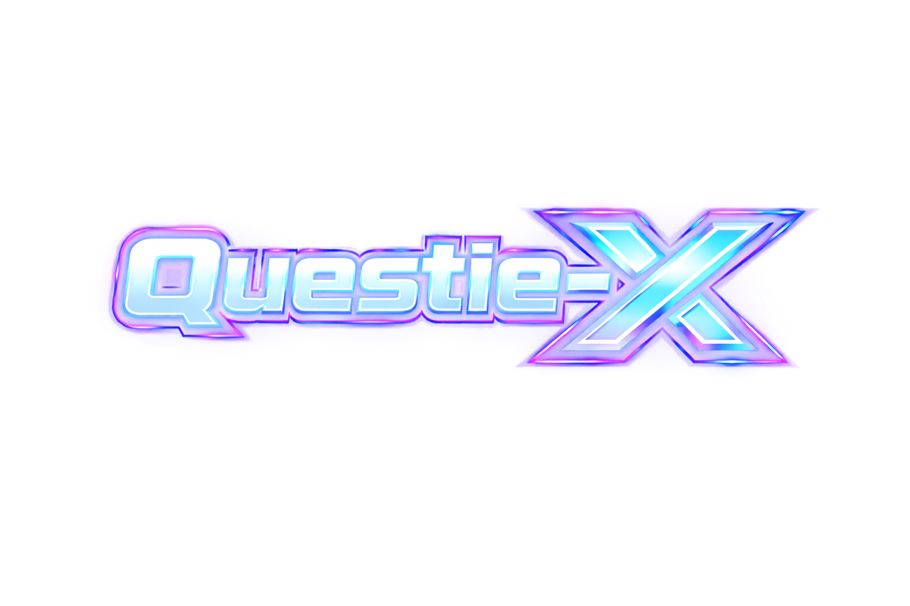

A Questie-X plugin that injects the Ascension server database — custom quests, NPCs, objects, items, and zone data — into Questie without modifying core files.
Version: v1.0.4
View
Changelog
Automatically activates on supported Ascension realms (Elune, Area 52, Bronzebeard, Rexxar, Grizzly Hills, and CoA Beta on Vol'jin), registering its data via the QuestiePluginAPI without modifying core files.
Questie-X must be installed. This plugin will not load without it.
Ascension servers: Elune, Area 52, Bronzebeard, Rexxar, Grizzly Hills, and CoA Beta on Vol'jin.
Interface/AddOns/ directory.Questie-X-AscensionDB.Questie-X is also present in Interface/AddOns/.| File | Contents |
|---|---|
AscensionLoader.lua |
Plugin entry point — registers data via QuestiePluginAPI |
Bronzebeard/AscensionNpcDB.lua |
Custom NPC data including spawn coordinates |
Bronzebeard/AscensionObjectDB.lua |
Custom object data |
Bronzebeard/AscensionItemDB.lua |
Custom item data |
Bronzebeard/AscensionQuestDB.lua |
Custom quest definitions |
Zones/AscensionUiMapData.lua |
UI map ID mappings for Ascension zones |
Zones/AscensionZoneTables.lua |
Zone table overrides |
AscensionLoader.lua calls QuestiePluginAPI:RegisterPlugin("Ascension") on load and passes the database tables as overrides. Questie-X merges them into its runtime database, giving full quest tracking, map pins, and tooltip support for Ascension-specific content.
The plugin only activates on recognized Ascension realm names. The loader checks for:
Ascension, Elune, Area 52, Bronzebeard, Rexxar, Grizzly Hills, CoA Beta on Vol'jinThe split-loading architecture reduces initial memory footprint. Database files are split into smaller chunks and loaded progressively via addonTable.
Questie-X-AscensionDB uses the QuestiePluginAPI to register its data:
local plugin = QuestiePluginAPI:RegisterPlugin("Ascension")
-- Inject each database type
plugin:InjectDatabase("QUEST", AscensionQuestDB)
plugin:InjectDatabase("NPC", AscensionNpcDB)
plugin:InjectDatabase("OBJECT", AscensionObjectDB)
plugin:InjectDatabase("ITEM", AscensionItemDB)
-- Optional: inject custom zone/map routing tables
plugin:InjectZoneTables(AscensionZoneTables)
-- Optional: inject fallback UiMapData for non-standard boundary maps
plugin:InjectUiMapData(AscensionUiMapData)
-- Always call this last — clears Questie's internal zone/quest caches
plugin:FinishLoading()Submit quest data, NPC coordinates, or fixes via pull request. See the existing database files for the expected table format.
When contributing learned data from QuestieLearner, export your data string and open an issue or pull request on the repository.